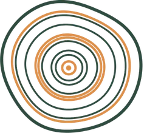

Meet Liisa Kleinhans
Registered Industrial Psychologist, certified Brain-Based coach and founder of Sisu.
Liisa brings a deeply human approach to how people and businesses grow. She combines psychological insight with commercial experience gained across large corporates, technology groups, start-ups and SMEs, so her work always connects people's wellbeing to business performance.
Since 2019 she has built organisational development functions from the ground up, led culture, engagement and wellbeing programmes across groups of companies, guided people through mergers and restructures as a change practitioner, and designed leadership, learning and team effectiveness journeys in financial services.
A background in both social work and industrial psychology means she always sees the person behind the role.
"Thriving in your career should never require sacrificing your personal wellbeing."
- Qualifications
- MCom Industrial Psychology · BCom Honours Industrial Psychology · Bachelor of Social Work, all Stellenbosch University
- Experience
- Corporate, financial services, technology, start-ups and SMEs, global consulting

A name rooted in heritage
Sisu is a Finnish word close to Liisa's heritage. It describes the quiet inner strength to keep going with courage and purpose, especially when things are hard.
There is no direct English translation, but Liisa thinks of it like the rings of a tree. Every season leaves its mark, the difficult years and the easier ones, and together they build something strong. That is the heart of her work: helping people, leaders, teams and organisations find and grow that strength from within.
Qualified to help
Registration
- Industrial Psychologist, HPCSA (PS 0150355)
- Social Worker (1040323)
Coaching & change
- Brain-Based Coaching, NeuroLeadership Institute
- Prosci Certified Change Practitioner
- Neuro-Linguistic Programming (NLP), Practitioner Certification
Team & individual profiling
- Insights Discovery
- Psytech: Team Roles; Leadership & Subordinate Styles
- Whole Brain Practitioner and Solutionsfinding (Neethling Brain Instruments)
- Job Profiling
Psychometric assessment
- Cognitive Process Profile (CPP)
- Genesys Psytech
- Saville Wave
- IP200 integrity
- Aon cut-e
- Clevry
Wellbeing
- Eye Movement Integration
- Neurozone Advanced Certification
- Somatic Experiencing (in progress)
Ready to start a conversation?
A no-obligation, 30-minute chat about what you're facing and what you'd like to change.